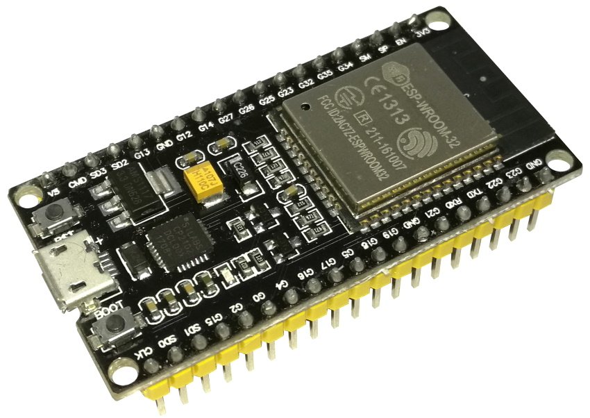
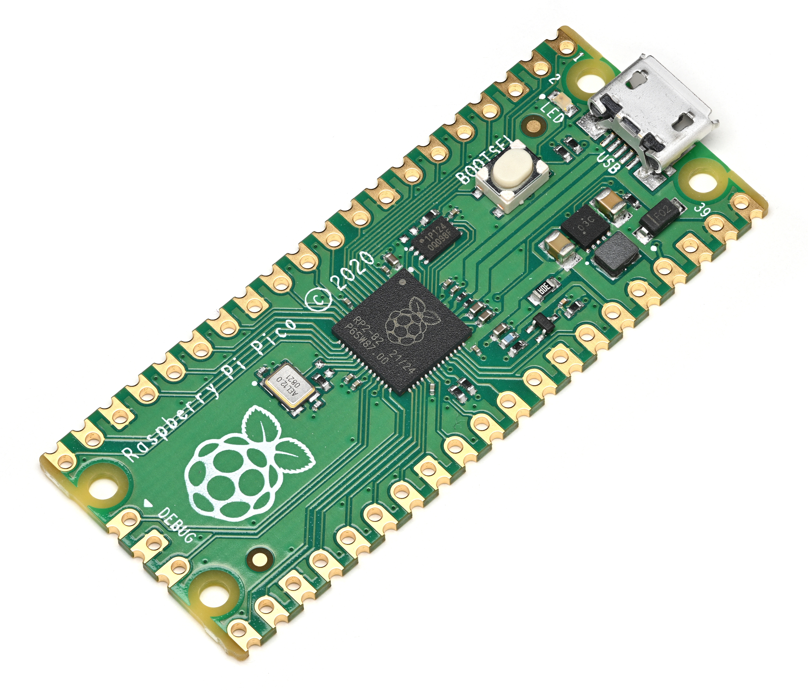

ESP32

Xtensa® Dual-Core, jusqu'à 240MHz.
Un microcontrôleur est un circuit intégré compact — un petit ordinateur sur une puce. Voici trois exemples populaires :

Xtensa® Dual-Core, jusqu'à 240MHz.

ATmega328P, 16MHz — très utilisé pour l'apprentissage.

RP2040, Dual‑Core ARM Cortex‑M0+.